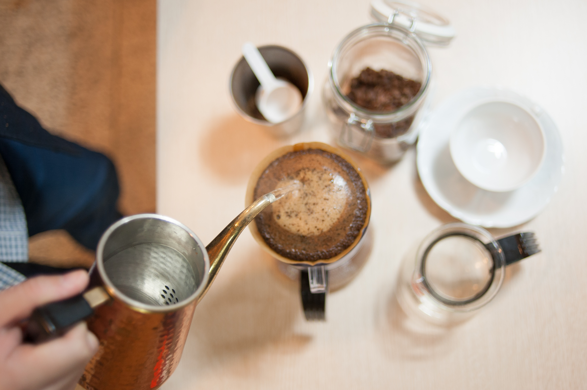

Our Story
静かに、一杯を。
早く多くではなく、一粒を見極め、一杯に向き合う。PonoLeaCoffeeがコーヒーと過ごす時間に込めている考え方をご紹介します。

二度の手間、二度のハンドピック
まず、焙煎前の生豆を一粒ずつ見極めます。色や形にわずかでも違和感があるものは取り除き、粒を揃えてから火を入れます。焙煎を終えたあとも、もう一度ハンドピックを行います。焼き上がりの状態を見極める、二度目の手仕事です。
この二度の手間が、雑味の少ない澄んだ味わいにつながっていると、多くのお客様にお伝えいただいています。時間のかかる作業ですが、省きたくない工程として続けています。
三谷バッハ仕込みの、一杯ずつの集中
店主は、コーヒーの名店として知られる三谷バッハで修行を積みました。この店で淹れる一杯も、基本はバッハ式。お湯の注ぎ方、蒸らしの時間、一つひとつの所作に静かな集中が込められています。
カウンターに座れば、豆の個性や淹れ方について気さくに話してくれる時間も、PonoLeaCoffeeらしい体験のひとつです。コーヒーについて教えてもらいながら、香りや味の違いを飲み比べる時間を楽しみにいらっしゃる方も多くいます。
オリジナルブレンドから、浅煎り・深煎りまで
PonoLeaCoffeeでは、オリジナルブレンドを中心に、浅煎りから深煎りまで幅広いラインナップを揃えています。その数は14種類。香りの立ち方、口当たりの軽さ、コクの深さなど、一つひとつ異なる個性を持っています。
「今日はどれにしようか」と選ぶ時間、そして「次はあの一杯を」と思いを残して店を出る時間。どちらも、PonoLeaCoffeeで過ごすひとときの一部です。銘柄ごとの詳しいご紹介はメニューページでご案内しています。
カウンター4席と、小さなテーブルひとつ
店内はこぢんまりとして、カウンターに4席、テーブルに4人ほどが座れる空間です。通りから少し奥まった、広場に面した場所にあるため、はじめて訪れる方にも見つけやすい立地です。
大きな店ではないからこそ、カウンターの向こうで豆に向き合う店主の気配や、立ちのぼるコーヒーの香りを近くに感じられます。静かに過ごしたい時間に寄り添う空間です。
広場に灯りが点る頃に
初冬の夕方、店を出る頃にはすっかり暗くなっていることがあります。広場の上に小さなランプが灯り、その灯りの中に、店の明かりがひとつ浮かんでいる。そんな情景を美しいと感じて帰っていくお客様がいらっしゃいます。
一粒を選ぶ手間も、一杯に向き合う時間も、静かな灯りのように、ゆっくりとこの店に積み重なっています。